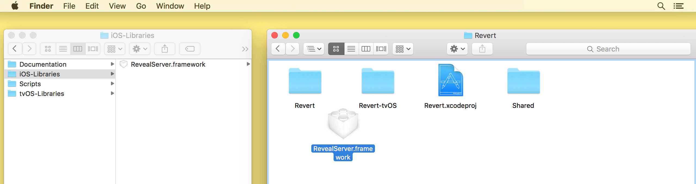
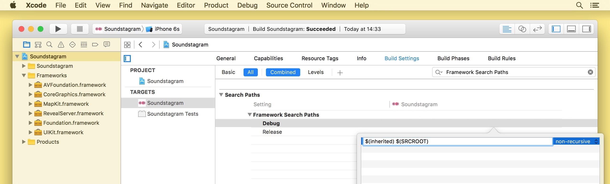
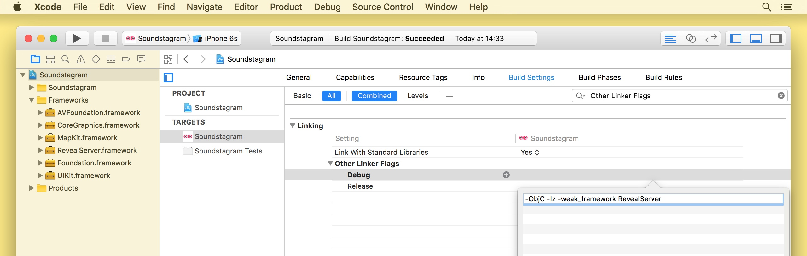
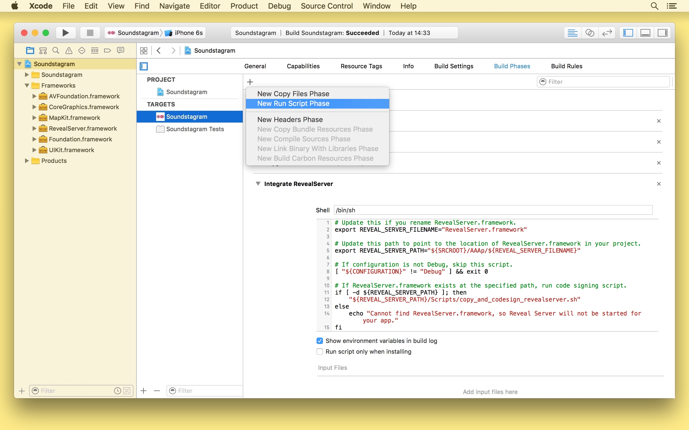

« Reveal Integration Guide
Linking Reveal into your app
Linking Reveal's Server framework into your iOS or tvOS application is a quick and easy way to enable Reveal introspection.
WARNING: Never ship a product which has been linked with the Reveal Server framework. The instructions below outline a way to use build configurations to isolate linking the framework to Debug builds.
You'll need to perform the following steps for each target that you wish to use with Reveal:
Launch Reveal and select either "iOS Library" or "tvOS Library" from the Help → Show Reveal Library in Finder menu. This will open a Finder window with the appropriate framework selected.

Copy RevealServer.framework to the root directory of your project in Finder by holding the Option (⌥) key while dragging it.

Note: It is important to copy RevealServer.framework into your project. Make sure that you press and hold the Option key while dragging the file, otherwise the Finder will create an alias, not a copy.
It is also very important to use Finder for this step. Adding the framework using Xcode's "Embedded Binaries" or "Linked Frameworks & Libraries" settings introduces build settings that we'll be customizing later in this guide.
You can also place the framework in a subdirectory to keep things organized. Just make sure to update the path environment variable on the run script phase (below) accordingly.
Open your project in Xcode, then select the project's icon in Xcode's Project Navigator.
Select the target you want to inspect using Reveal from the TARGETS list.
Select the Build Settings tab and add the following to the Debug configuration of the Framework Search Paths (
FRAMEWORK_SEARCH_PATHS) setting:$(inherited) $(SRCROOT)
Still in the Build Settings tab, add the following to the Debug configuration of the Other Linker Flags (
OTHER_LDFLAGS) setting:-ObjC -weak_framework RevealServer
Still in the Build Settings tab, add the following to the Debug configuration of the Runpath Search Paths (
LD_RUNPATH_SEARCH_PATHS) if it is not already present:$(inherited) @executable_path/FrameworksSelect the Build Phases tab and add a new Run Script phase — name it "Integrate Reveal Server" or something suitably descriptive. Paste in the following shell script:
export REVEAL_SERVER_FILENAME="RevealServer.framework" # Update this path to point to the location of RevealServer.framework in your project. export REVEAL_SERVER_PATH="${SRCROOT}/${REVEAL_SERVER_FILENAME}" # If configuration is not Debug, skip this script. [ "${CONFIGURATION}" != "Debug" ] && exit 0 # If RevealServer.framework exists at the specified path, run code signing script. if [ -d "${REVEAL_SERVER_PATH}" ]; then "${REVEAL_SERVER_PATH}/Scripts/copy_and_codesign_revealserver.sh" else echo "Cannot find RevealServer.framework, so Reveal Server will not be started for your app." fiNote: If you choose to keep RevealServer.framework elsewhere, follow the comments in the script to update the
REVEAL_SERVER_PATHenvironment variable.
In Xcode, build and run your application using a scheme that is set to use the Debug configuration. If you are running your iOS or tvOS application on a device, ensure that it is on the same Wi-Fi network as Mac running Reveal, or connected to your Mac by its USB cable.

If everything worked, you should be able to switch to Reveal and see your iOS or tvOS application listed in Reveal. Select your app and verify that you can see a snapshot of the app matching what you see in the simulator (or device).
Run your application again, this time using a scheme set to use the Release configuration. Verify that Reveal cannot connect to your application. If you can still connect, check to make sure RevealServer.framework is not listed in the Link Binary With Libraries section of the Build Phases tab.
No code needs to be added, nor any headers imported for Reveal integration. The framework will load automatically at launch and start the necessary Reveal services within your app.
Getting Help
If you have any problems or questions about integrating Reveal into your app, head over to our support site.